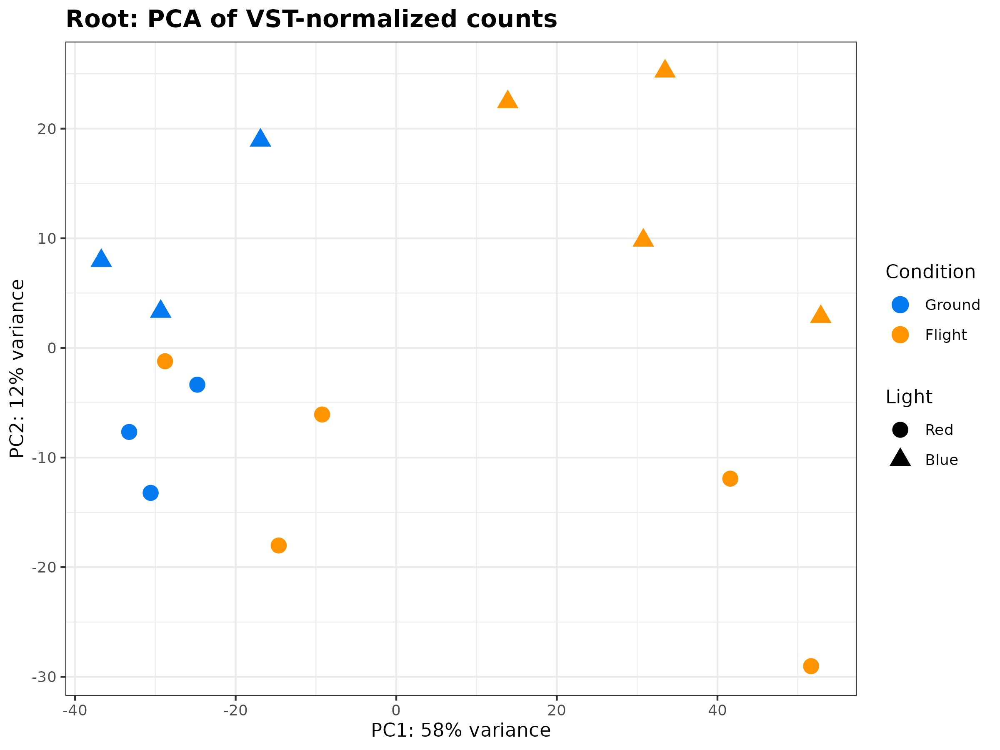
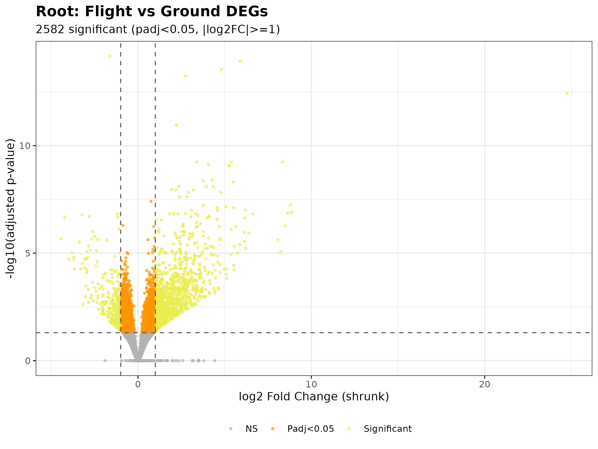
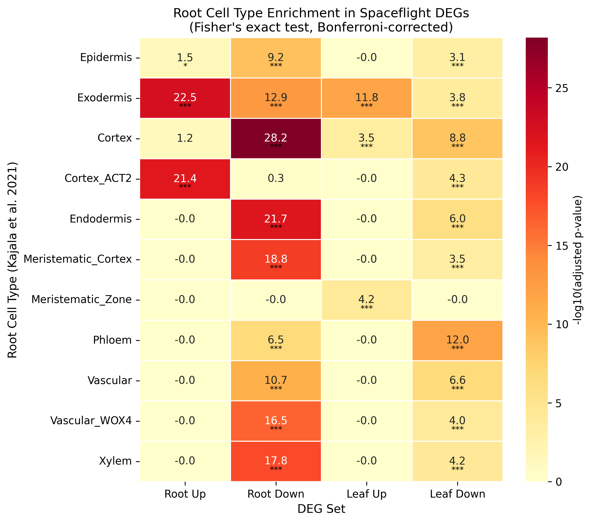

Background: Cultivating nutrient-dense crops in microgravity is a critical requirement for long-duration human space exploration. The VEG-05 experiment studied dwarf tomato (Solanum lycopersicum cv. Red Robin) aboard the ISS under varying light spectra, but the underlying molecular adaptations remained incompletely understood. Methods: We performed RNA-seq analysis of NASA OSDR data (OSD-767), evaluating differential expression in leaf (n=21) and adventitious-root (n=15) tissues between spaceflight and ground controls, with red/blue light modelled as covariates (adapted GeneLab RNAseq Consensus Pipeline; S. lycopersicum SL3.0 reference). Results: Spaceflight produced a pervasive response in both organs — leaf 2,132 DEGs (1,032 up / 1,100 down) and adventitious root 2,582 (1,706 up / 876 down), roots larger and more up-regulated. Functional enrichment converged on oxidative-stress management and specialised metabolism: root up-regulated genes were dominated by "response to oxidative stress" (GO BP FDR ≈ 6.5×10⁻¹³), hydrogen-peroxide catabolism, ethylene signalling, and KEGG phenylpropanoid (FDR ≈ 4×10⁻³⁰), flavonoid and stilbenoid biosynthesis with glutathione metabolism; leaf up-regulated genes for heme/iron binding, monooxygenase activity, phenylpropanoid/flavonoid biosynthesis, MAPK and hormone signalling. Circadian-rhythm genes were down in both organs; roots also suppressed Calvin-cycle carbon fixation and starch/sucrose metabolism. Root DEGs localised to cortex, exodermis, endodermis, meristematic cortex and vascular (xylem) cell types (odds ratios ≈ 2.7–4.4). Conclusions: Spaceflight imposes a coordinated stress signature — antioxidant and phenylpropanoid/flavonoid metabolism, hormone signalling and circadian dysregulation — quantitatively strongest in adventitious roots, identifying targets for engineering resilient crops for bioregenerative life support.
Dwarf tomato in spaceflight: the main effects of microgravity under red/blue light
Transcriptomic profiling of Solanum lycopersicum cv. Red Robin from the ISS VEG-05 experiment (OSD-767), modelling red vs blue light as a covariate to isolate the core spaceflight response across leaf and adventitious-root tissues.
Headline: spaceflight remodels both organs — 2,132 leaf and 2,582 adventitious-root DEGs — with the root response larger, up-regulation-biased, and dominated by oxidative-stress management and phenylpropanoid/flavonoid metabolism, localising to ground-tissue and vascular cell types.
Abstract
Highlights
Both organs remodelled
2,132 leaf and 2,582 adventitious-root DEGs; the root response is larger and up-regulation-biased.
Antioxidant + specialised metabolism
Root up: oxidative-stress response (FDR ≈ 6.5×10⁻¹³), phenylpropanoid (FDR ≈ 4×10⁻³⁰), flavonoid & glutathione metabolism.
Circadian suppression
Circadian-rhythm genes down in both organs; roots also suppress Calvin-cycle carbon fixation and starch/sucrose metabolism.
Cell-type localisation
Root DEGs localise to cortex, exodermis, endodermis and vascular (xylem) cell types (OR ≈ 2.7–4.4).
Selected figures



Data & code
- Manuscript:
manuscript/(Markdown,.docx, and an npj-styledmanuscript_npj.tex) - Analysis code:
analysis/(DE, enrichment, cell-type projection, light-interaction pathways) - Results:
results/(enrichment tables, KEGG/SBGN light-interaction pathway maps) - Figures:
manuscript/figures/(Fig 1–6)
Sequencing data from NASA OSDR (OSD-767); cite the accession. OSDR data remain subject to the NASA Open Data policy.